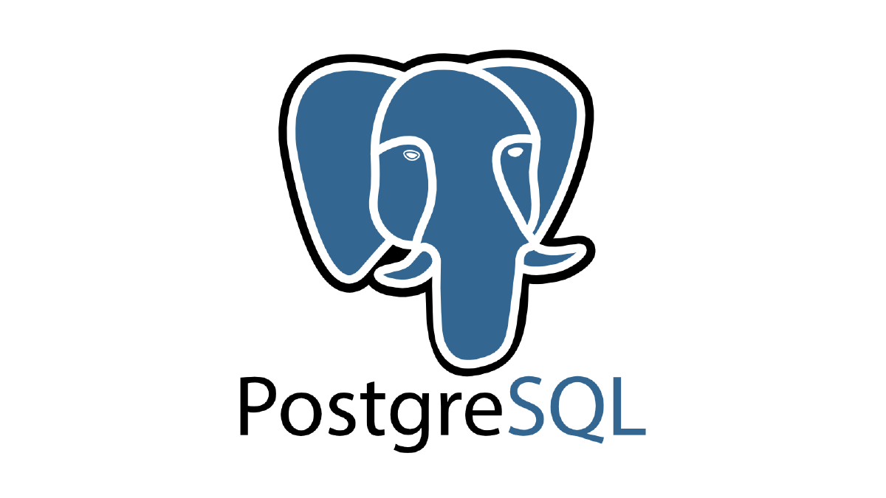
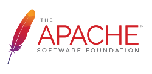

Compétences


- **Serveurs** (id, nom, type, CPU, RAM, stockage)
- **Types de serveurs** (id, type, description)
- **Utilisateurs** (id, nom, prénom, email)
- **Services** (id, nom, date de lancement, espace disque utilisé, RAM nécessaire, serveur hôte)
- **Applications** (id, nom, logo, utilisateur responsable)
- **Usage des ressources** liant applications et services
Nous avons implémenté un **CRUD complet** pour chaque entité, avec contrôles de capacité CPU/RAM lors de l’ajout de services et d’applications, et import par fichier structuré. Le tout est déployé sur une VM Linux dédiée, avec base de données PostgreSQL et serveur web Nginx + Flask.
### Compétences validées
- **AC0311 :** Utiliser un système informatique et ses outils
- **AC0312 :** Lire, exécuter, corriger et modifier un programme
- **AC0313 :** Traduire un algorithme dans un langage et environnement donnés
- **AC0314 :** Connaître l’architecture et les technologies d’un site Web
- **AC0315 :** Choisir des mécanismes de gestion de données adaptés
- **AC0316 :** Travailler en environnement collaboratif
## 3. Short English Summary of the SAE
This SAE (Situation d’Apprentissage et d’Évaluation) tasked us with designing and deploying a web-based data management system for a company’s IT infrastructure. We built a “ServerManager” application,
featuring full CRUD operations on servers, server types, users, services, and applications, with capacity checks (CPU/RAM) and bulk import via structured
The solution runs on a Linux VM with PostgreSQL and Flask, demonstrating proficiency in programming fundamentals, web technologies, data handling, and collaborative development workflows.
## 4. Bilan personnel
- **Ce qui m’a plu :**
- La mise en place complète de la chaîne DevOps : de la VM Linux à l’application web.
- Les contrôles automatiques de ressources (CPU/RAM) qui renforcent la robustesse du système.
- Le travail en équipe avec GitHub. - **Ce qui m’a moins plu :
- Le Nombres de choses à rendre